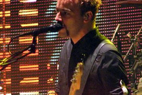

Web Development
and good Music
Tool
 Tool is an American rock band from Los Angeles, Caliofornia. Formed in 1990, the group's line-up has included drummer Danny Carey, guitarist Adam Jones, and vocalist Maynard James Keenan. Since 1995, Justin Chancellor has been the band's bassist, replacing their original bassist Paul D'Amour. Tool has won three Grammy Awards, perfomed worldwide tours, and produced albums topping the charts in several countries. The band emerged with a heavy metal sound on their first studio album, Undertow (1993),and later became a dominant act in the alternative metal movement with the release of their second effort, Enima, in 1996. Their efforts to unify musical experimentation, visual arts, and a message of personal evolution continued with Lateralus (2001) and the most recent album, 10.000 Days (2006), gaining the band critical acclaim and commercial success around the world.
Tool is an American rock band from Los Angeles, Caliofornia. Formed in 1990, the group's line-up has included drummer Danny Carey, guitarist Adam Jones, and vocalist Maynard James Keenan. Since 1995, Justin Chancellor has been the band's bassist, replacing their original bassist Paul D'Amour. Tool has won three Grammy Awards, perfomed worldwide tours, and produced albums topping the charts in several countries. The band emerged with a heavy metal sound on their first studio album, Undertow (1993),and later became a dominant act in the alternative metal movement with the release of their second effort, Enima, in 1996. Their efforts to unify musical experimentation, visual arts, and a message of personal evolution continued with Lateralus (2001) and the most recent album, 10.000 Days (2006), gaining the band critical acclaim and commercial success around the world.
Muse
 Muse are an English rock band from Teignmouth, Devon, which formed in 1994. The band consists of school friends Matthew Bellamy (lead vocals, lead guitar, piano, keyboards, keytar), Christopher Wolstenholme (bass, vocals, keyboards, rhythm guitar, harmonica) and Dominic Howard (drums, percussion, synthesisers, sampling).
Original photo available here.Antimatter
 Antimatter, a UK melancholic rock band, is the project of longtime member Mick Moss. The project was formed in 1997 by Duncan Patterson (former bassist/songwriter of Anathema) and Moss. The pair released three albums together - Saviour, Lights Out and Planetary Confinement. Shortly after the completion of Planetary Confinement, Patterson left to start another band called lon. Moss continued and released the project's fourth album, Leaving Eden, with Anathema guitarist Danny Cavanagh, following with 2009's Live@An Club, released on Moss' own label Music in Stone. Most recently Moss has overseen a 10 year retrospective multi-disc release entitled 'Alternative Matter' , and announced the 5th Antimatter album as 'Fear Of A Unique Identity' for release in 2012.
Antimatter, a UK melancholic rock band, is the project of longtime member Mick Moss. The project was formed in 1997 by Duncan Patterson (former bassist/songwriter of Anathema) and Moss. The pair released three albums together - Saviour, Lights Out and Planetary Confinement. Shortly after the completion of Planetary Confinement, Patterson left to start another band called lon. Moss continued and released the project's fourth album, Leaving Eden, with Anathema guitarist Danny Cavanagh, following with 2009's Live@An Club, released on Moss' own label Music in Stone. Most recently Moss has overseen a 10 year retrospective multi-disc release entitled 'Alternative Matter' , and announced the 5th Antimatter album as 'Fear Of A Unique Identity' for release in 2012.